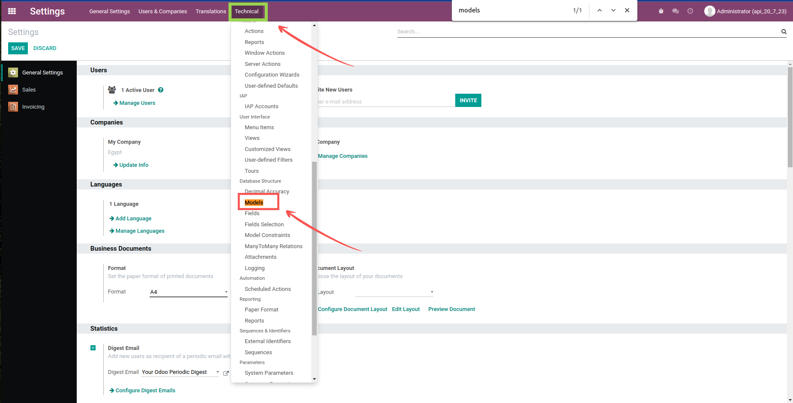
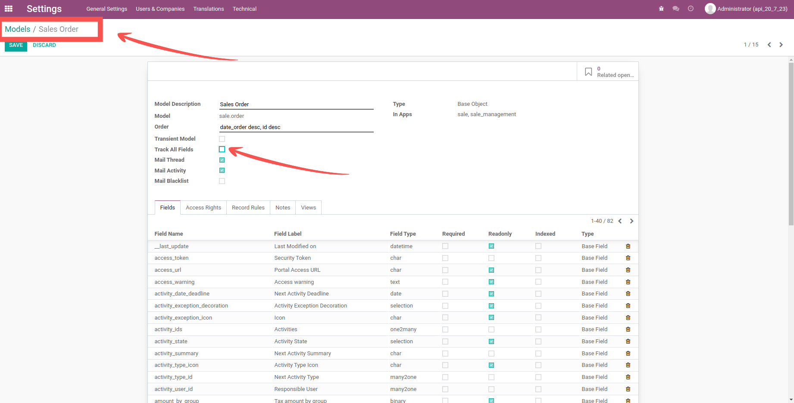
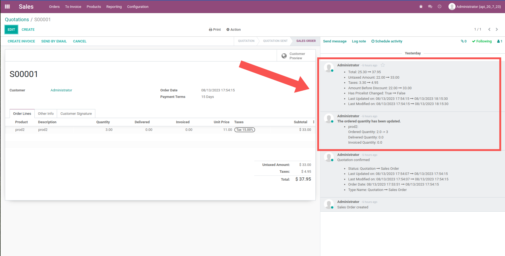

<section class="oe_container">
  <div class="oe_row oe_spaced">
    <h2 class="oe_slogan" style="color: #875a7b">
      Track All Fields For Any Model With 2 Steps Only!
    </h2>
    <h3 class="oe_slogan">
      You can track all fields for any model with 2 steps
    </h3>
    <div class="oe_demo oe_picture oe_screenshot">
      
    </div>
    <h3 class="oe_slogan">
      First Step : Active The Developer Mode , Then Navigate To Technical Menu
      And Choose Models SubMenu
    </h3>
    <div class="oe_demo oe_picture oe_screenshot">
      
    </div>
    <div style="height: 100px"></div>
    <h3 class="oe_slogan">
      Second Step : Choose Any Model you want and check the check box that
      called "Track All Fields"
    </h3>
    <div class="oe_demo oe_picture oe_screenshot">
      
    </div>

    <div style="height: 100px"></div>
    <h3 class="oe_slogan">Finally : Those Are The Results</h3>
    <div class="oe_demo oe_picture oe_screenshot">
      
    </div>
    <div style="height: 100px"></div>
  </div>
</section>
